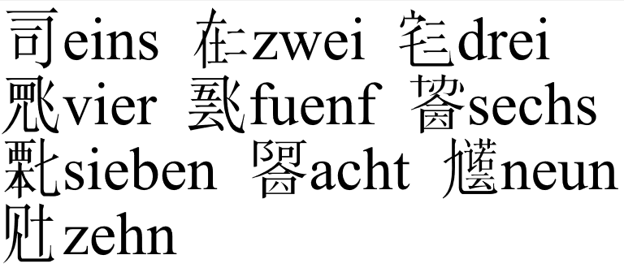
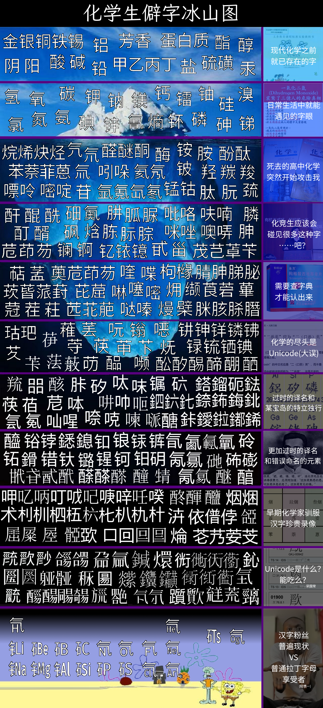
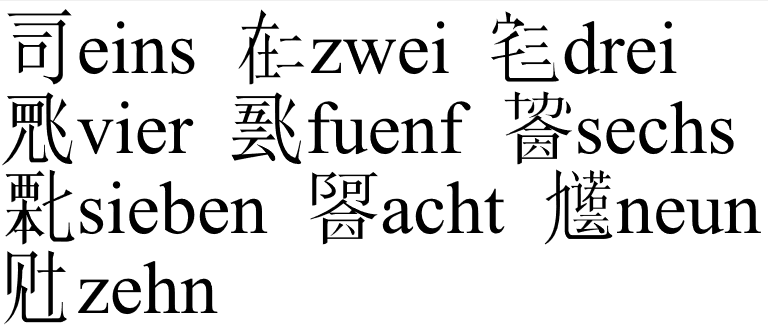
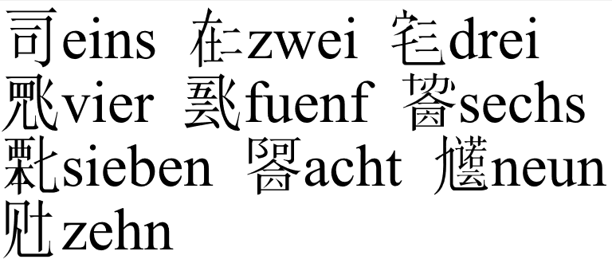
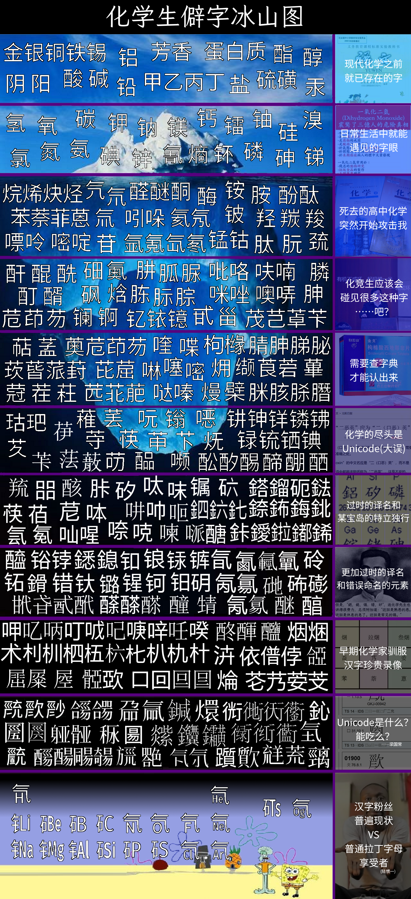
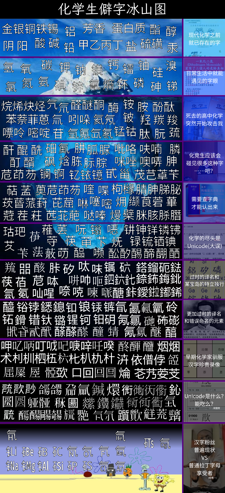
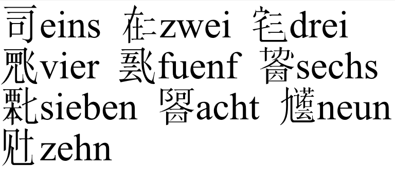
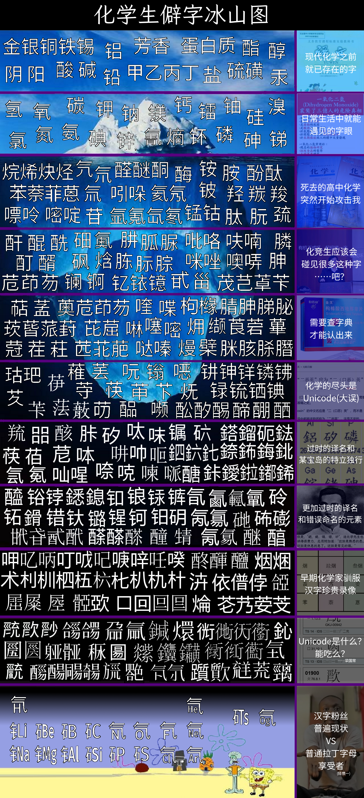
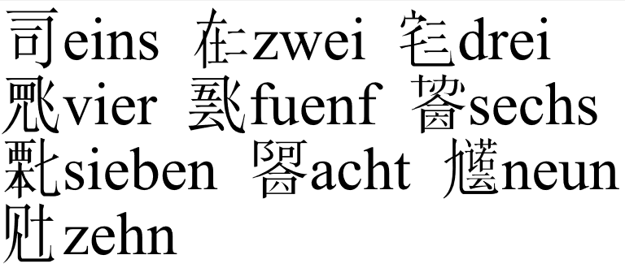
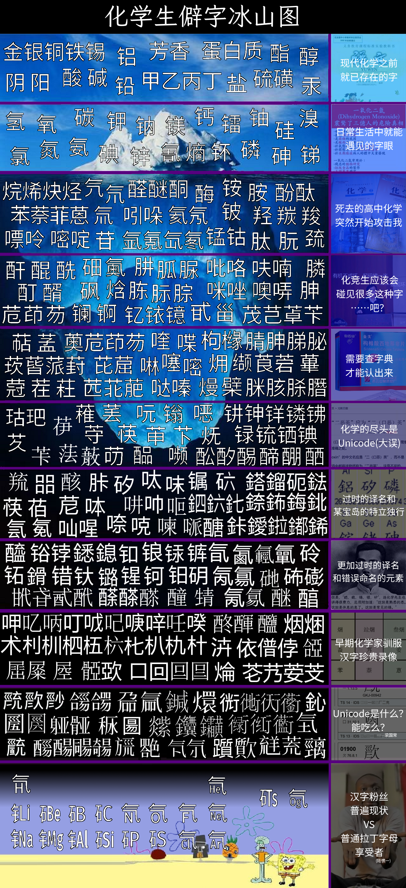

Guykann Tschjov 收集的网站
菜鸟教程
我学习建设网站的地方
HTML表格编辑器
没这玩意写表格得累死我
Mario Fan Games Galaxy
找马里奥素材最好的地方
Transcendental Algebra
数学运算和象形文字的结合
Uscript中文介绍
与外星人交流用的人造文字
Uscript英文原文
如果中文版还没够让你头大的话
在线女书字典
世界上最政治不正确的文字
The Spriters Resource
各种游戏的素材
字统网
能查字，还能造字
叶典网
能用释义反查字，字统不行
德语助手
中文查德语词汇
Webilo辞典
最全日语词汇
Tell.wtf
输入花体英文&手写查询符号
字源查询
查询汉字字源，不太靠谱
Etymonline
查询英文词源
趣词-英语词根字典
查询英语拉丁希腊词根
JS IMAGE CARVER
基于内容的图片压缩
Ostagram
一款强大的图片艺术滤镜工具
煎蛋-无聊图
煎蛋的网友上传的趣图
PixelMe
将大头贴转化为像素画风格
Pixilart
在线绘制像素画
梦蓝字幕组发布站
在线看哆啦A梦最新中字
UnicodeTable
查找Unicode字符
谷歌字体
能直接用在网页上的字体
Ybzj图片混淆
加密图片内容
chunom.org
将拉丁字越南语翻译成喃字
emojikitchen
上一个网页的穷举版
emojimix
将不同的emoji融合起来
www.random.org
提供
真正的
随机数的网站
申论生成器
自动生成申论
在线图片鉴黄工具
上传的色图他会定期检查
恶臭数字论证器
已经烂大街的银梦梗
神奇海螺试验场
别人的自制小工具页面，前边三个都是他的
Irasutoya
日本人用的千篇一律的小插图就是从这来的
壮汉在线词典
查询汉语词对应的壮语词
字形维基/古壮字字典
字形维基上的古壮字字典，〧𡚦𭑫佲
讯飞星火认知大模型
生在网络墙国，还要啥自行车？
秘塔写作猫
免费10000字AI写作，水论文利器
waifu2x
放大自己的waifu图
随机古谚文音节生成器
随机生成满屏古谚文
死因：墙
EveryoneDraw
和全世界一起画像素画
死因：墙
竖中指字符画
比Rickroll更具侮辱性的诈骗连接
死因：522内部服务器错误
字统网ids解读指南
字统网自造ids的解释
死因：未知
Guykann Tschjov 的图片


 



 


 


